Ogrod
 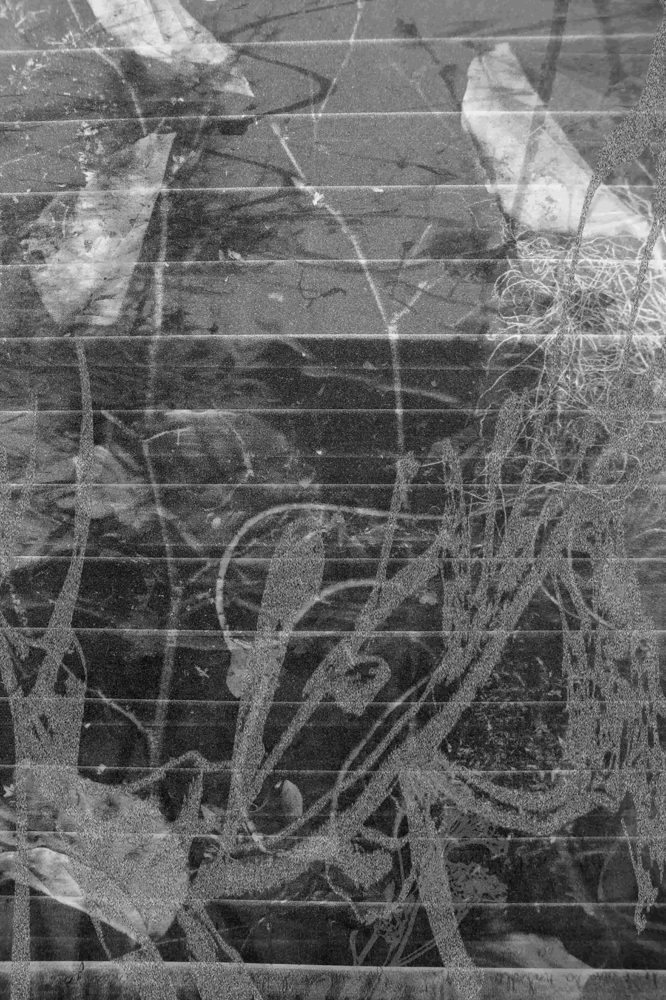
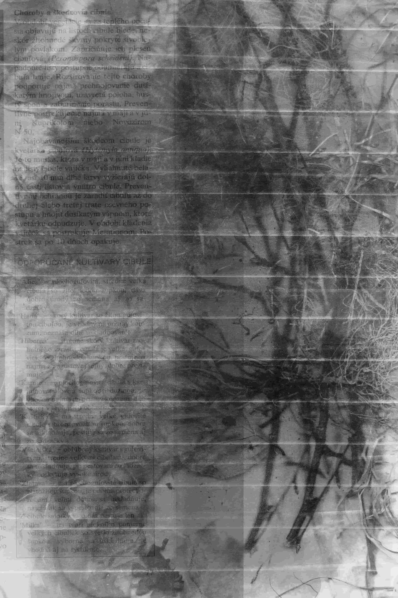
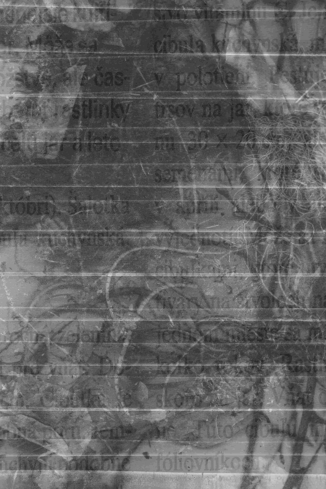
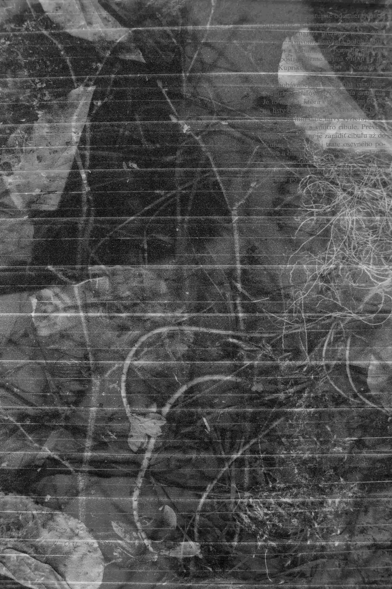
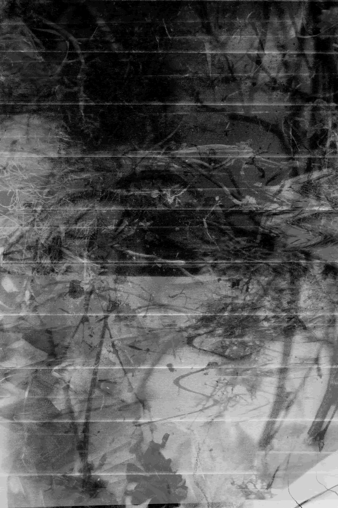
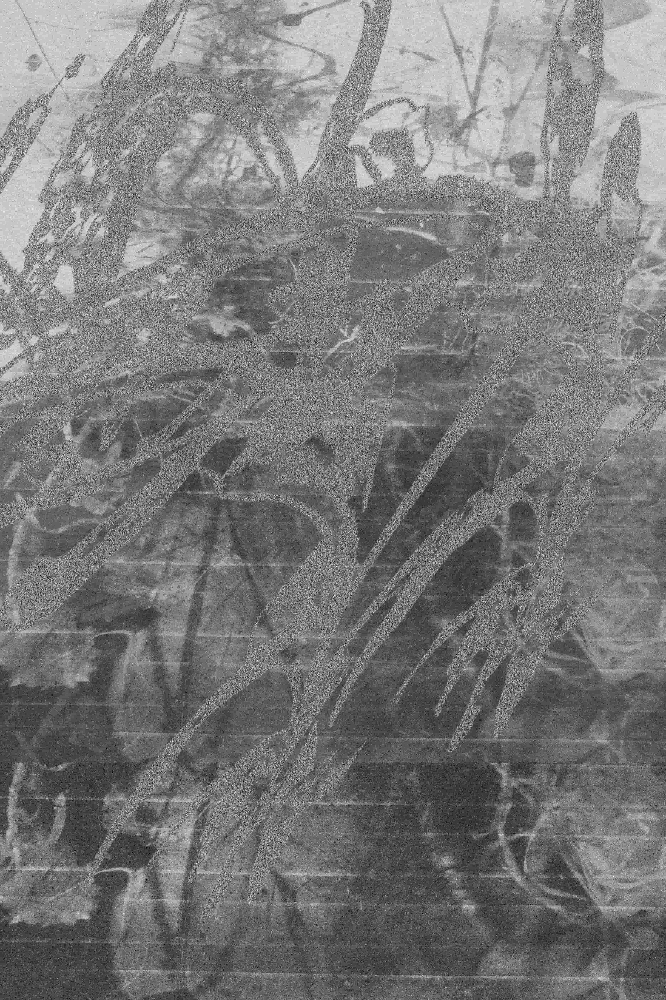
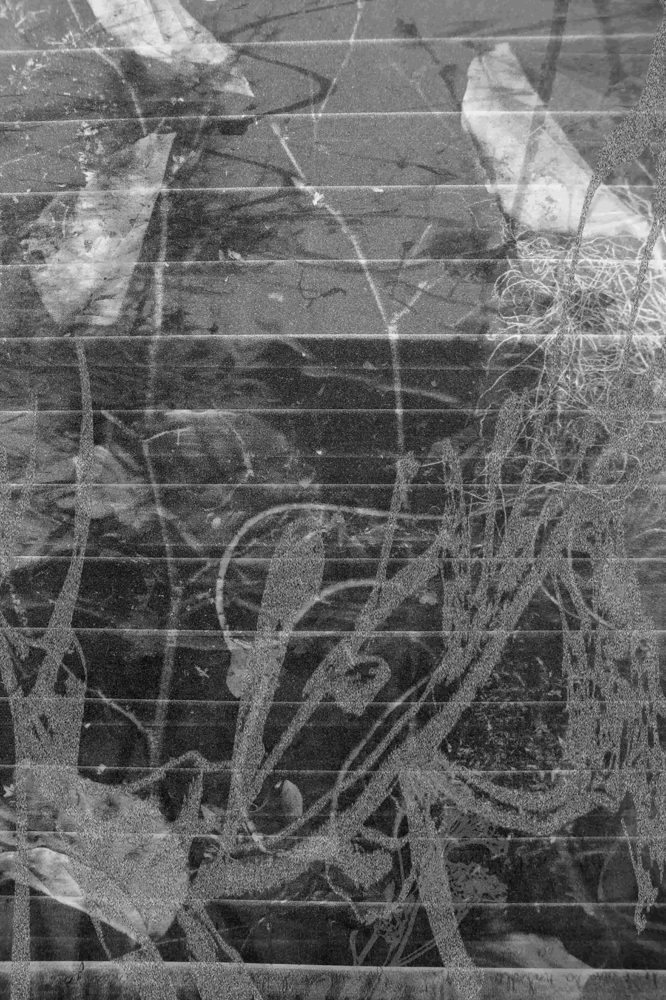
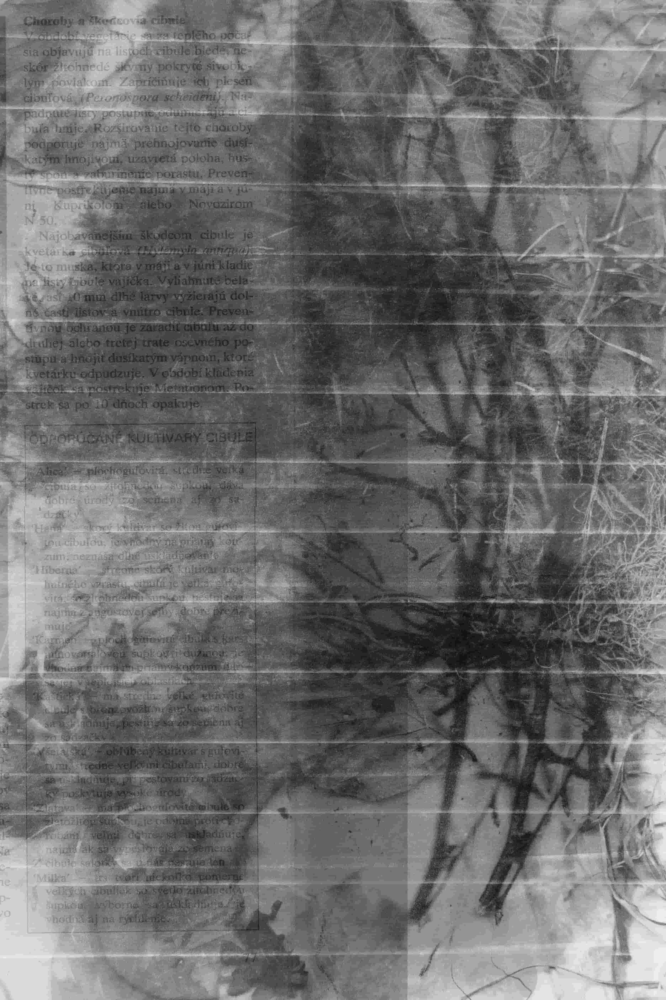
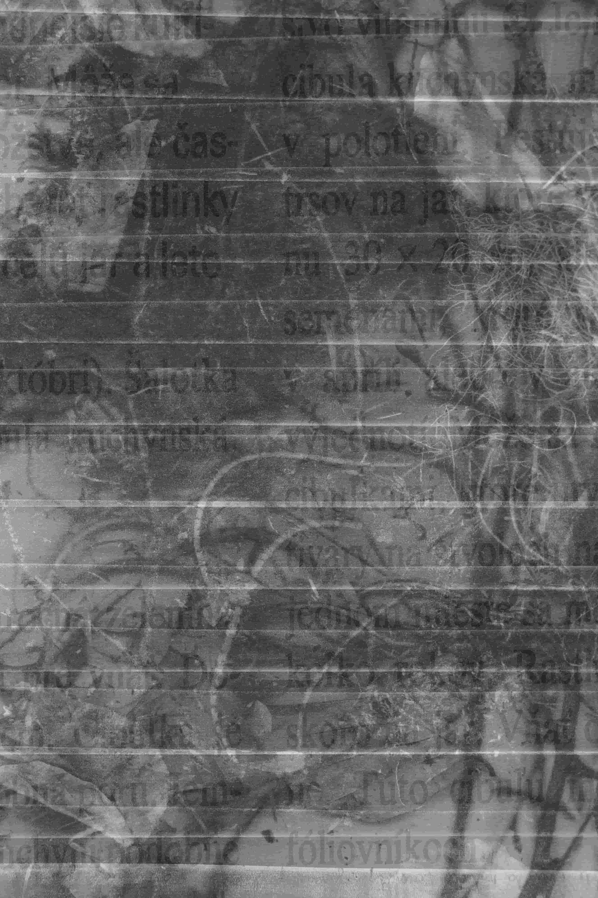
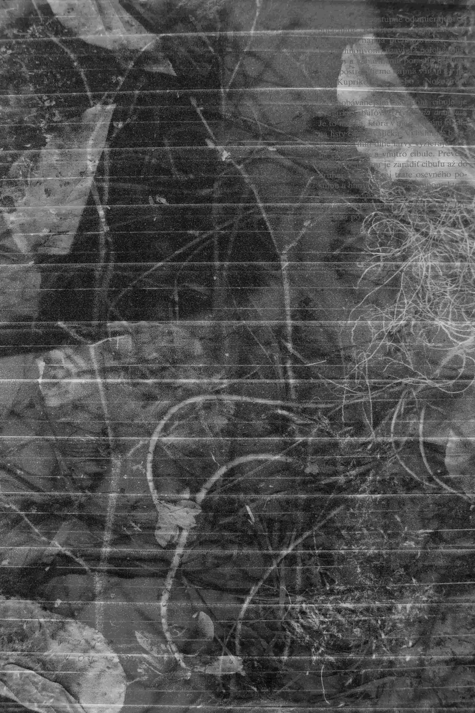
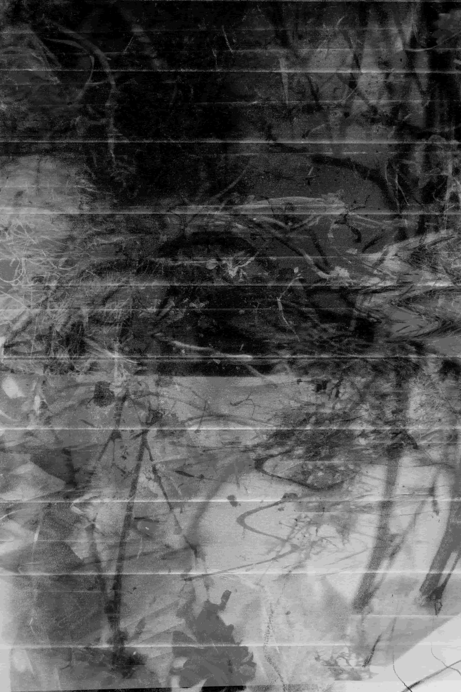
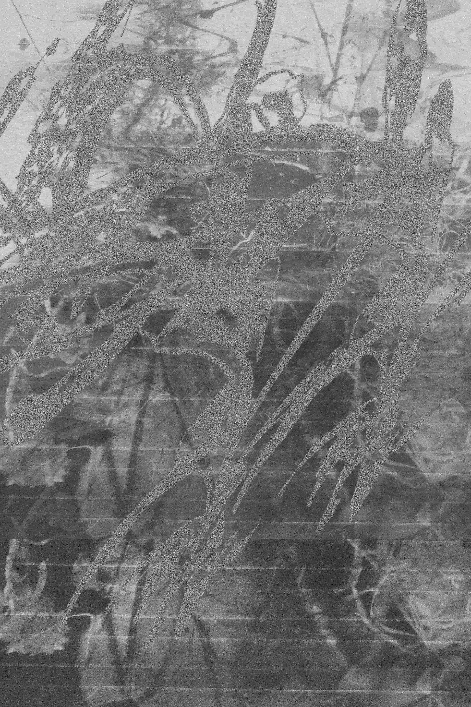
 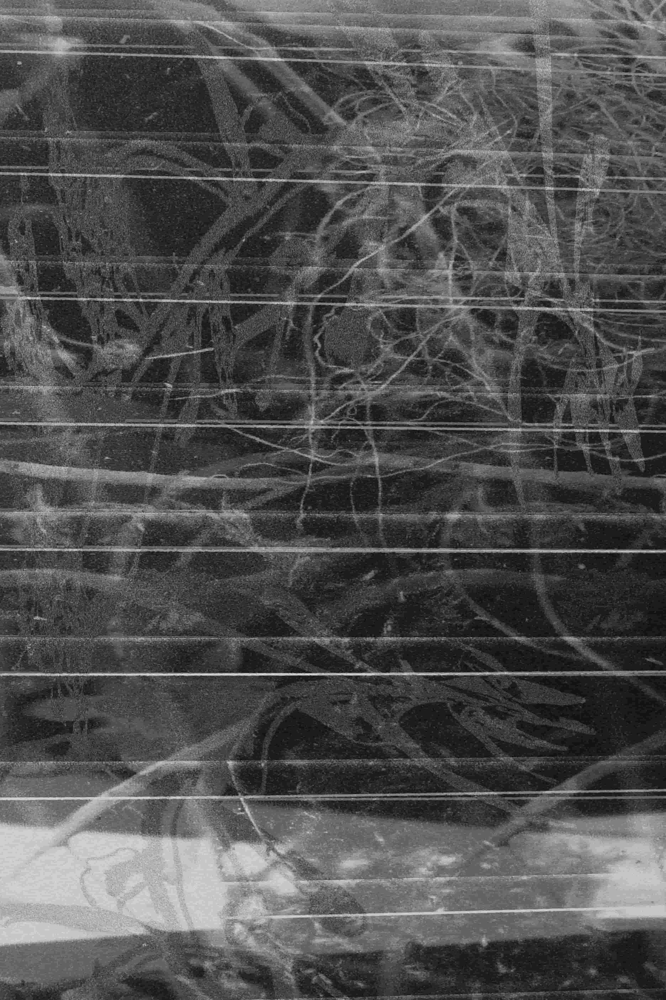
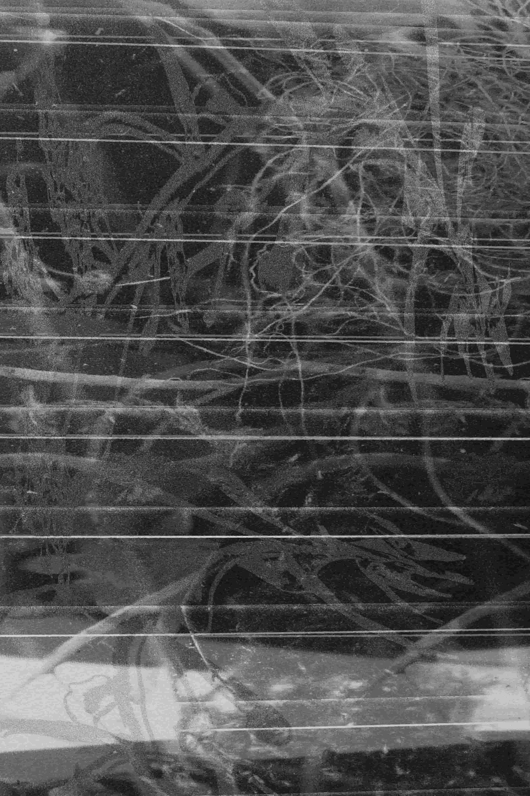
digitál, 1000 × 700 mm, 2020
Záhrada. Miesto odpočinku, tvrdej práce, úžitkových, ale aj okrasných rastlín. Biodiverzita je súčasťou každej
fungujúcej záhrady. Rôznorodosť rastlín ma zaujala aj v našej záhrade. Rodičia sú vášniví záhradkári a v našej
knižnici nájdeme veľa kníh, ktoré majú niečo spoločne so záhradou. Záhrada nesie dôležité posolstvo a to vzťah
človeka a prírody, ktorý sa vďaka nej buduje. Ľudská ruka určuje ako záhrada vyzerá a ako sa bude vyvíjať. Tá
naša je zaujímavá hlavne chaosom. Často v nej nájdeme pri zelenine kvety alebo naopak. Veľa buriny, ktorá sa
spája s rastlinami, stromy obklopené kvetmi a podobne. Biodiverzita je zopakovaná aj vo výsledných skenoch,
ktoré spájajú kvety, rastliny a burinu dokopy, a tak tvoria celok ako aj v záhrade.